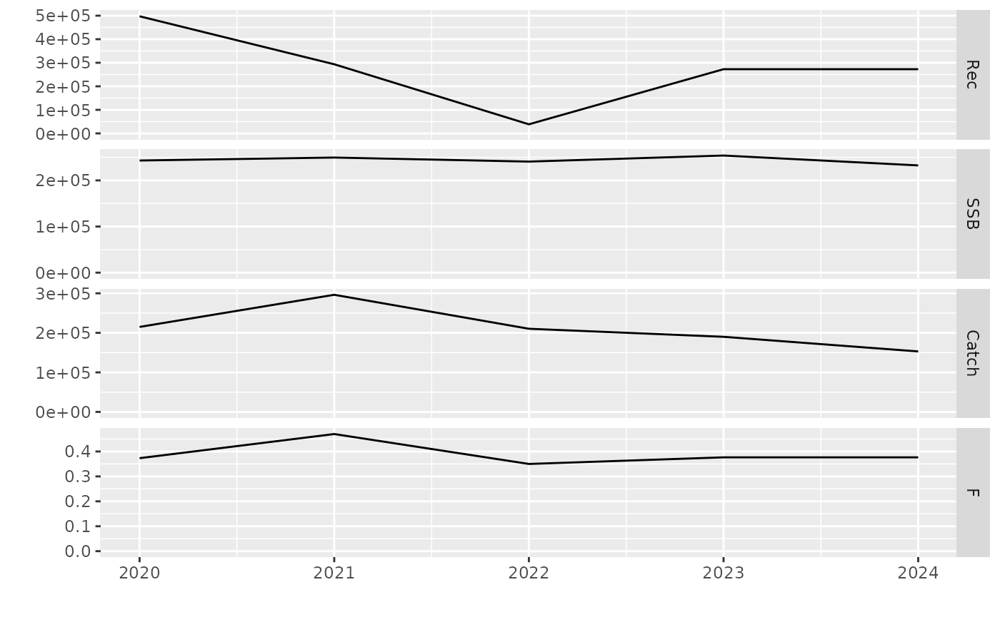

run-classic.RmdR MFDP supports running forecast using the classic Lowestoft’s MFDP input data. A single input data consists of several files including its index file and a control file. The mfdp package provides samples of these input files here.
This set of input files is indexed by an index file. Let’s have a peek at the content in one of the index file (e.g., Fpa2020ind.txt):
Fpa2020ind.txt
Fpa2020MFDP Index file 27.04.2020
0
****
Fpa2020CWt.txt
Fpa2020SWt.txt
Fpa2020M.txt
Fpa2020Mat.txt
Fpa2020PF.txt
Fpa2020PM.txt
Fpa2020F.txt
Fpa2020N.txt
Fpa2020Ctrl.txtThe above index file points to several other files. Let’s have a look inside the control file (Fpa2020Ctrl.txt):
Fpa2020Ctrl.txt
HCR2020MFDP Index file 27.04.2020control file27.04.2020
5
4,7
497416,293623,38636,272681,272681,
1
0
0
215000
1.248296
.929582And one of the data file (Fpa2020CWt.txt)
Fpa2020CWt.txt
Fpa2020CWt
1,3
2020,2024
3,13
1
.716,.95,1.224,1.604,1.895,2.077,2.38,2.626,2.79,3.045,3.329,
.708,.946,1.192,1.471,1.846,2.128,2.311,2.627,2.806,2.993,3.417,
.744,.957,1.182,1.43,1.736,2.087,2.358,2.573,2.807,3.004,3.376,
.744,.957,1.182,1.43,1.736,2.087,2.358,2.573,2.807,3.004,3.376,
.744,.957,1.182,1.43,1.736,2.087,2.358,2.573,2.807,3.004,3.376,You can find the full description of the files in the official Lowestoft’s MFDP manual document link.
Running the forecast using the classic input is straightforward:
# Load the mfdp library
library(mfdp)
# Get the index file (note that we need the full path)
input <- system.file("sample/nea-had-2020", "Fpa2020ind.txt", package = "mfdp")
print(input)
#> [1] "/home/runner/work/_temp/Library/mfdp/sample/nea-had-2020/Fpa2020ind.txt"
# Run it
output <- mfdp(input, run_name = "test", out_dir = "out-classic")
#> Warning in readLines(inputfile): incomplete final line found on '/home/runner/
#> work/_temp/Library/mfdp/sample/nea-had-2020/Fpa2020N.txt'
#> Warning in is.na(raw$stk): is.na() applied to non-(list or vector) of type 'S4'
#> Saving 7.29 x 4.51 in image
#> Saving 7.29 x 4.51 in imageRunning the mfdp function above will instruct MFDP to run the forecast and write output files into ./out directory. We can check the output files:
list.files("out-classic")
#> [1] "test_prm_plot.pdf" "test_prs_plot.pdf" "test-prm.pdf"
#> [4] "test-prs.pdf" "test.xlsx"After successfully running a forecast, MFDP returns several output objects in a single list. Here we use the term prm for the Management Options Table and prs for the Single Option Prediction results.
print(names(output))
#> [1] "prm" "prs"
# Let's see the Management Options Table
print(output[["prm"]])
#> $stk
#> An object of class "FLStock"
#>
#> Name:
#> Description:
#> Quant: age
#> Dims: age year unit season area iter
#> 11 5 1 1 1 21
#>
#> Range: min max pgroup minyear maxyear minfbar maxfbar
#> 3 13 13 2020 2024 4 7
#>
#> catch : [ 1 5 1 1 1 21 ], units = NA
#> catch.n : [ 11 5 1 1 1 21 ], units = NA
#> catch.wt : [ 11 5 1 1 1 21 ], units = NA
#> discards : [ 1 5 1 1 1 21 ], units = NA
#> discards.n : [ 11 5 1 1 1 21 ], units = NA
#> discards.wt : [ 11 5 1 1 1 21 ], units = NA
#> landings : [ 1 5 1 1 1 21 ], units = NA
#> landings.n : [ 11 5 1 1 1 21 ], units = NA
#> landings.wt : [ 11 5 1 1 1 21 ], units = NA
#> stock : [ 1 5 1 1 1 21 ], units = NA
#> stock.n : [ 11 5 1 1 1 21 ], units = NA
#> stock.wt : [ 11 5 1 1 1 21 ], units = NA
#> m : [ 11 5 1 1 1 21 ], units = NA
#> mat : [ 11 5 1 1 1 21 ], units = NA
#> harvest : [ 11 5 1 1 1 21 ], units = f
#> harvest.spwn : [ 11 5 1 1 1 21 ], units = NA
#> m.spwn : [ 11 5 1 1 1 21 ], units = NA
#>
#> $fmult
#> An object of class "FLQuant"
#> iters: 21
#>
#> , , unit = unique, season = all, area = unique
#>
#> year
#> age 2020 2021 2022 2023
#> all 0.99118(0.000) 1.24830(0.000) 0.92958(0.000) 1.00000(0.741)
#> year
#> age 2024
#> all 1.00000(0.741)
#>
#> units: NA
#>
#> $ftgt
#> An object of class "FLQuant"
#> iters: 21
#>
#> , , unit = unique, season = all, area = unique
#>
#> year
#> age 2020 2021 2022 2023 2024
#> all 0.37318(0) 0.46998(0) 0.34999(0) 0.00000(0) 0.00000(0)
#>
#> units: NA
#>
#> $parameters
#> $parameters$flag
#> [1] 1 0 0
#>
#> $parameters$target
#> [1] 2.150000e+05 1.248296e+00 9.295820e-01
#>
#> $parameters$ssbunder
#> An object of class "FLQuant"
#> iters: 21
#>
#> , , unit = unique, season = all, area = unique
#>
#> year
#> age 2020 2021 2022 2023 2024
#> all 0(0) 0(0) 0(0) 0(0) 0(0)
#>
#> units: NAThe stk object is an FLStock class object https://flr-project.org/FLCore/reference/FLStock.html from the FLR suite https://flr-project.org/. The developers have provide a wealth of tutorial about the format here: https://flr-project.org/#tutorials.
Next we have the fmult object, which holds the F multiplier values over the years in the FLQuant class, the ftgt object which is the F target over the years, and lastly parameters object, which is the control parameters/configuration for the forecast.
Some example of methods supported by FLStock:
library(FLCore)
#> Loading required package: lattice
#> Loading required package: iterators
#> FLCore (Version 2.6.16.9004, packaged: 2021-09-29 09:21:02 UTC)
# Get the SSB
print(ssb(output[["prs"]]$stk))
#> An object of class "FLQuant"
#> , , unit = unique, season = all, area = unique
#>
#> year
#> age 2020 2021 2022 2023 2024
#> all 243131 249570 240780 253928 232520
#>
#> units: NA
# Get the Catch total
print(catch(output[["prs"]]$stk))
#> An object of class "FLQuant"
#> , , unit = unique, season = all, area = unique
#>
#> year
#> age 2020 2021 2022 2023 2024
#> all 215000 296268 210348 190011 152991
#>
#> units: NA
# Get the Catch number
print(catch.n(output[["prs"]]$stk))
#> An object of class "FLQuant"
#> , , unit = unique, season = all, area = unique
#>
#> year
#> age 2020 2021 2022 2023 2024
#> 3 14767.05 10929.89 1076.86 8166.03 8166.03
#> 4 66243.10 49400.45 22005.16 3135.95 22074.97
#> 5 42064.91 104111.11 47085.98 30786.24 4054.81
#> 6 20994.82 40517.54 60714.36 41333.86 24811.45
#> 7 10898.65 12255.40 13973.19 32599.65 20222.85
#> 8 4358.64 6805.50 4543.79 8076.07 17157.67
#> 9 3919.12 2361.81 2168.80 2284.02 3687.34
#> 10 1430.36 2123.65 752.67 1090.19 1042.83
#> 11 1783.83 775.07 676.77 378.34 497.75
#> 12 762.43 966.60 247.00 340.19 172.74
#> 13 1875.92 1429.64 763.64 508.02 387.27
#>
#> units: NA
# Get the Fbar
print(fbar(output[["prs"]]$stk))
#> An object of class "FLQuant"
#> , , unit = unique, season = all, area = unique
#>
#> year
#> age 2020 2021 2022 2023 2024
#> all 0.37318 0.46998 0.34999 0.37650 0.37650
#>
#> units: fLet’s plot the forecast results:
# Plot the Management Options Table
plot(output[["prm"]]$stk)
# Single Option Prediction
plot(output[["prs"]]$stk)